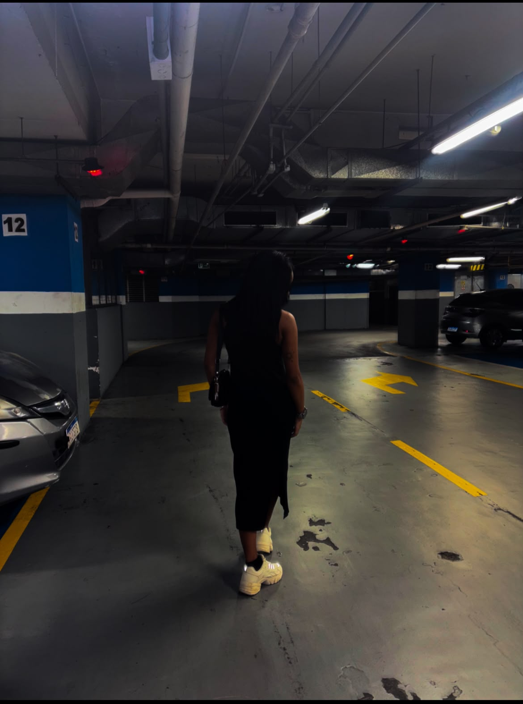
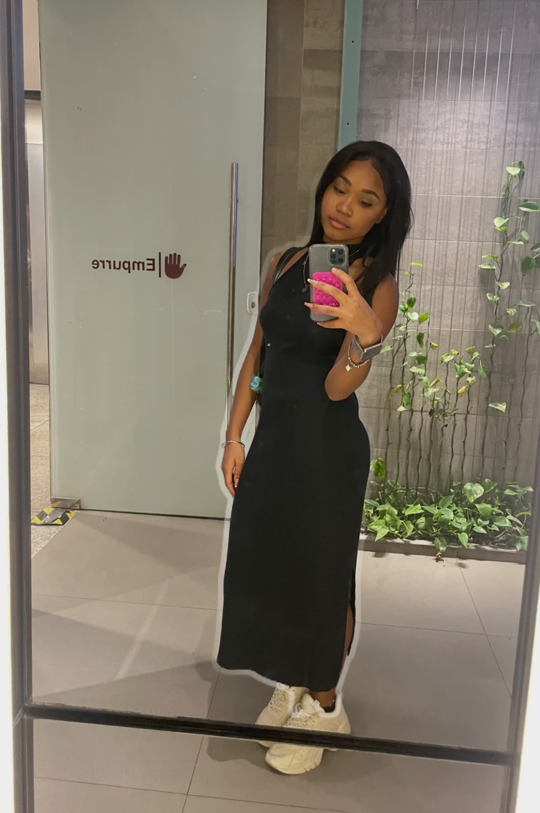
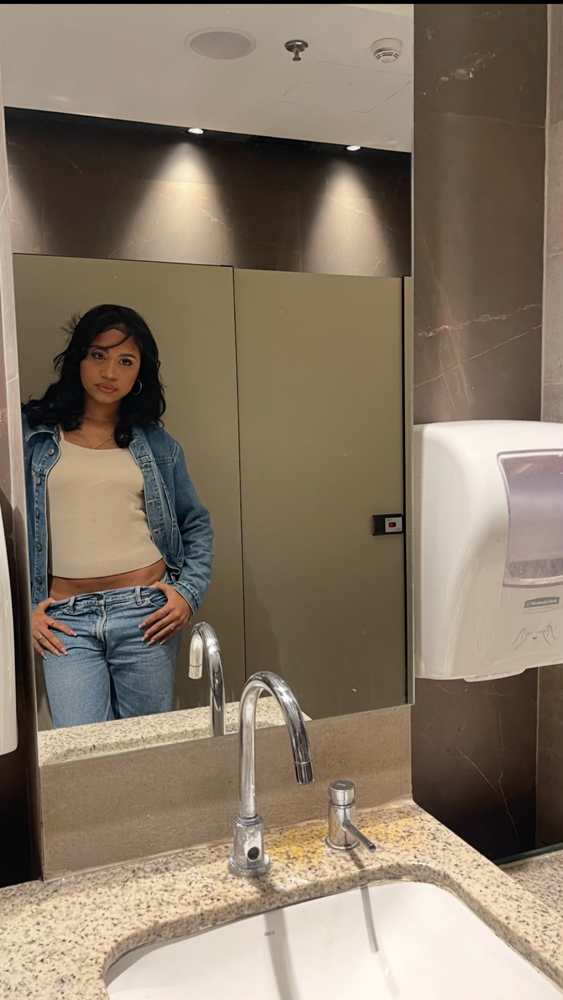
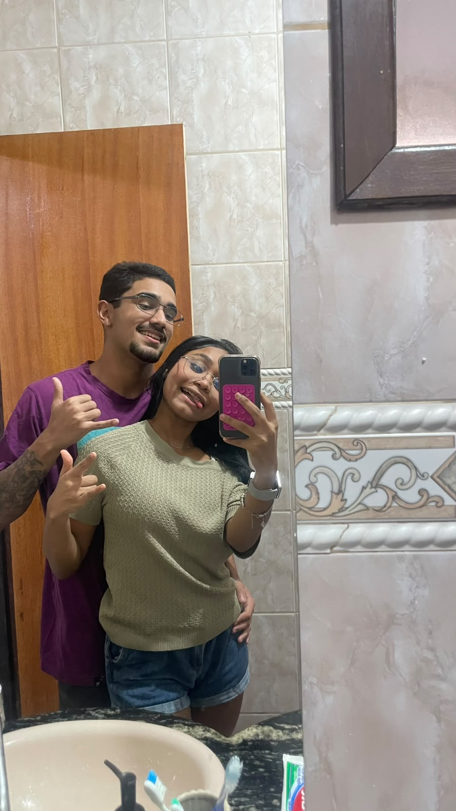
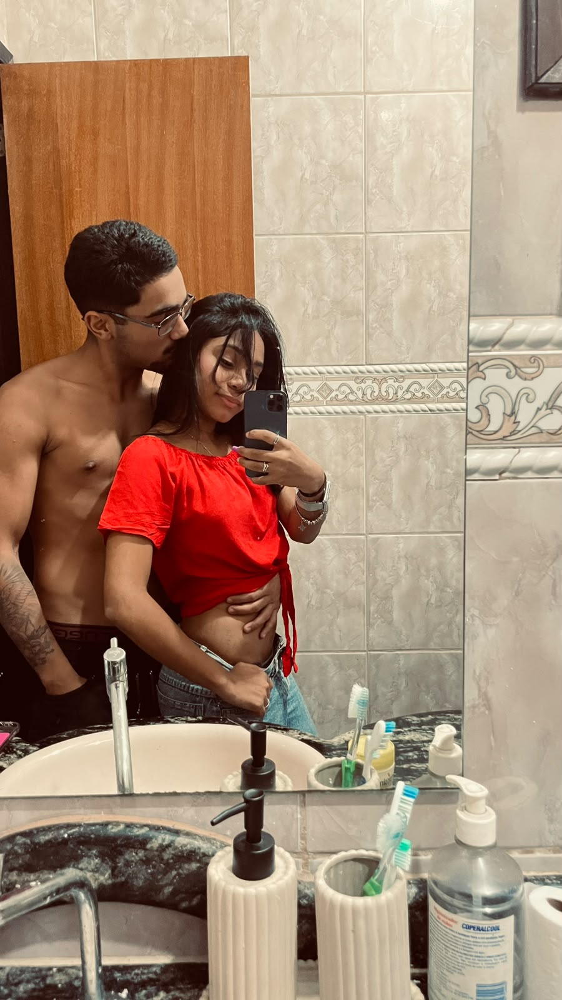
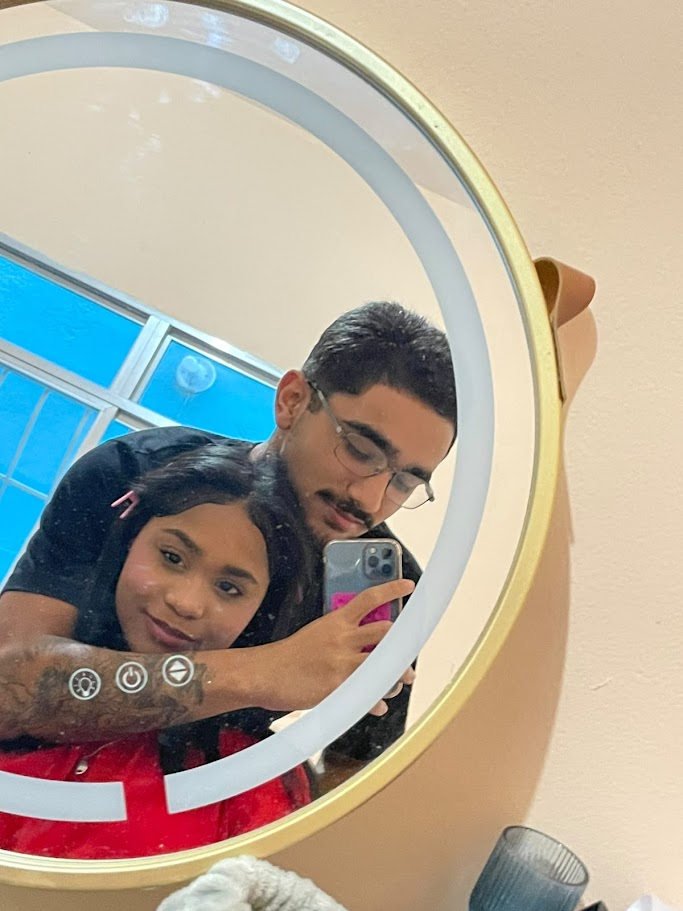

momentos dela
cor favorita dela
azul

lugar favorito
a praia
alguns momentos merecem mais do que desaparecer numa galeria.

Paris morgan
estampa favorita
oncinha
duas demãos, sempre
Cor favorita dele
roxo

pequenas memórias, guardadas
humor do momento
leve e apaixonada

sem planos, os melhores planos
pequenas coisas
Mineirinho, musicas, Maquiagem
nós, também
pessoa favorita
Pedro

caminhada aleatória, a melhor até agora
destino dos sonhos
Morar na Praia
ainda minha pessoa favorita pra me perder junto